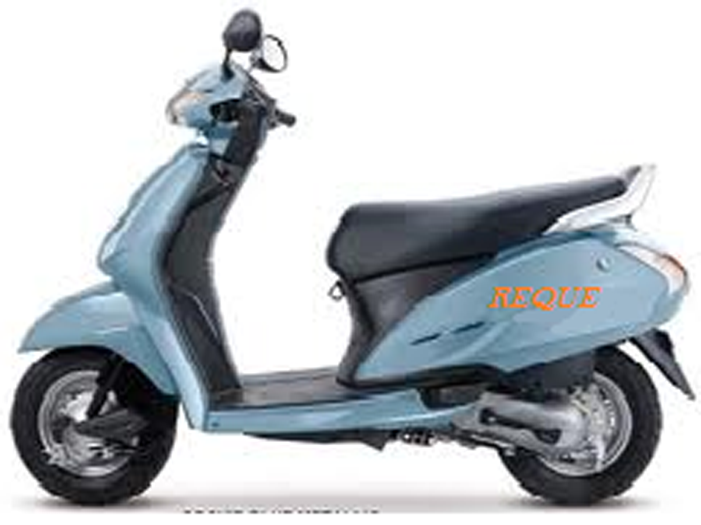
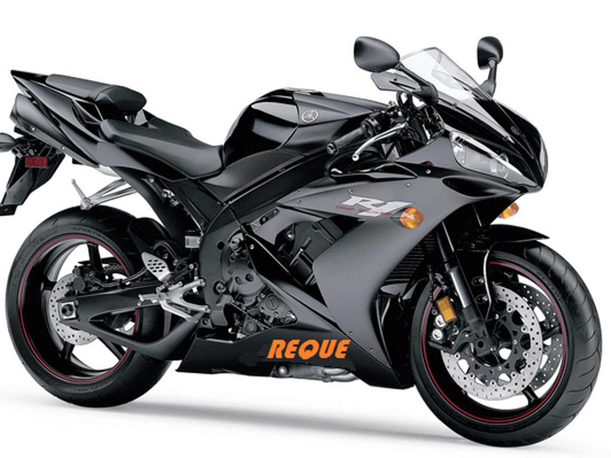

FACTORY STATUS

Main factort of REQUE BIKES AND ECOOTY company is situated in rajasthan ,bhilwarada. where all the
raw material use for make the attractive models but now a main factory in rajasthan.
Many branches of factories are also developed now ,but in beginning there were only one factory which is now a main factory in rajasthan.
In which all raw material like steel firbres and different parts of the bikes supplied to factories from different cities markets and then company purchase these raw material in advance and in stock.
Many of factories are also situted at kanpur,agra,mumbai,kolhapur,goa. in which our factory enginears and workers sucessfully make our new bikes models and our super fast bikes engine. and after all manufacturing process our new bikes and scooty aresupplied it to big dealers of bikes and scooty ,malls,shops.
For online buy of REQUE bikes and scooty
Quality Control

>
Taste samples are made from each batch throughout the manufacturing process, usually at a rate of once per hour. The tasters check the chips for salt, seasoning, moisture, color, and overall flavor. Color is compared to charts that show acceptable chip colors.
Preventing breakage is a primary goal for potato chip manufacturers. Companies have installed safeguards at various points in the manufacturing process to decrease the chances for breakage. The heights that chips fall from conveyer belts to fryers have been decreased. Plastic conveyer belts have been replaced with wide mesh stainless steel belts. These allow only the larger chips to travel to the fryers and the smaller potato slivers to fall through the mesh.
Byproducts/Waste
Rejected potatoes and peelings are sent to farms to be used as animal feed. The starch that is removed in the rinsing process is sold to a starch processor.
The Future
GOLDY chips show no sign of declining in popularity. However, the public's increased demand for low-fat foods has put manufacturers on a fast track to produce a reduced-calorie chip that pleases the palate as well.
Food technicians are using computer programs to design a crunchier chip. Upper- and lower-wave forms are fed into the computer at varying amplitudes, frequencies, and phases. The computer then spits out the corresponding models. Researchers are also working on genetically engineered potatoes with less sugar content since it is the sugar that produces brown spots on chips.But recently we have launch a sugurfree chips.